온톨로지로 전력망을
AI가 이해하는 지식으로Turning the power grid into
knowledge AI understands
온톨로지의 기본 개념에서 시작해 IEC CIM 기반 전력망 온톨로지, 파이썬 프로젝트 pycim, VPP · 분산에너지, 분야별 온톨로지 설계, AI와의 연결까지 직접 만들어 보며 정리한 곳입니다.
Starting from what an ontology is, this site works through the IEC CIM–based power grid ontology, the Python project pycim, VPPs and distributed energy, ontology design in several fields, and the link to AI — all built hands-on.
① 온톨로지 입문① Ontology primer
개념, 구성요소, RDF · OWL · Cypher, 식별자
Concepts, building blocks, RDF · OWL · Cypher, identifiers
입문 페이지Primer② 전력망 온톨로지② Power grid ontology
IEC CIM, CGMES, 인터랙티브 단선도, 고장 복구
IEC CIM, CGMES, interactive single-line diagram, fault restoration
전력망 페이지Power Grid③ 프로젝트 pycim③ Project: pycim
CIM 파이썬 클래스, pandapower · OpenDSS 변환
CIM in Python, export to pandapower · OpenDSS
프로젝트 페이지Project④ Cypher 실습④ Cypher lab
브라우저에서 Cypher 질의, 데이터 검증, 지식 그래프
Cypher queries in the browser, data validation, knowledge graph
실습 페이지Lab⑤ 디지털 트윈⑤ Digital Twin
가상 대한민국 전력망의 24시간 상태를 지도 위에서 재생
Play 24 hours of a virtual Korean grid on a map
디지털 트윈Digital Twin⑥ VPP · 분산에너지⑥ VPP · DER
가상발전소 기본 개념, VPP 10개가 참여하는 가상 전력시장
Virtual power plant basics and a virtual market with ten VPPs
VPP 페이지VPP⑦ 온톨로지 설계실⑦ Design Studio
업무 · 자산관리 · 도로 교통 · 전기차 충전 · 고장 영향 · 안전 · 생태계, 일곱 사례의 설계 결정
Seven cases with their design decisions: work, assets, roads, EV charging, failure impact, safety, an ecosystem
설계실Design Studio⑧ AI × 온톨로지⑧ AI × Ontology
LLM만 · 문서 검색 · GraphRAG 비교, 고장 영향을 추론하는 AI 에이전트
LLM alone vs. RAG vs. GraphRAG, and an agent tracing a failure
시연 보기See the demo⑨ 피지컬 AI⑨ Physical AI
개념, 관련 기술, 진화로 운전 · 게임 · 비행을 배우는 NEAT 시뮬레이션
Concepts, key technologies, and NEAT simulations that evolve to drive, play and fly
피지컬 AI 페이지Physical AI⑩ 시뮬레이션⑩ Simulations
안전 훈련, 전력망 · 에너지, 교통, 생태계, 진화 학습까지 15개 모두 보기
All 15: safety training, grid and energy, traffic, an ecosystem, evolutionary learning
둘러보기Browse⑪ 내가 이해한 전력시장⑪ The power market, as I understand it
입찰 → SMP → 급전지시 → 정산, 발전사업자와 VPP 사업자의 수익 (개인 학습 노트)
Bidding → SMP → dispatch → settlement, and how generators and VPP operators earn (personal notes)
노트 보기Read the notes⑫ 온톨로지 vs. 객체지향 설계⑫ Ontology vs. OOD
같은 ESS를 파이썬 클래스와 OWL로, 일곱 가지 차이
One battery as Python and OWL, seven differences
비교 보기Compare🗺 한눈에 보기: 사이트 전체 온톨로지 지도At a glance: the ontology map of the whole site
업무 · 전력설비 · 변전소 · 배전선로 · 고장 영향 · 디지털 트윈 · 전기차 · 고속도로 · 안전 · VPP · 생태계, 온톨로지와 데이터 모델 11개가 서로 어떻게 이어지는지 한 장으로 봅니다.
Work, assets, a substation, feeders, failure impact, the digital twin, EV charging, roads, safety, VPPs and an ecosystem: see how eleven ontologies and data models connect, on one page.
지도 보기 →Open the map →어디서부터 읽을까Where to start
관심에 따라 고른 읽는 순서입니다. 위에서부터 차례로 보면 됩니다.
Reading orders picked by interest. Go from top to bottom.
처음이라면New to ontologies
온톨로지가 무엇인지부터 직접 질의해 보기까지
From what an ontology is to running your own queries
- 온톨로지 입문Ontology primer: 용어와 기술을 쉬운 비유로: terms and technologies in plain language
- 온톨로지 vs. 객체지향 설계Ontology vs. OOD: 클래스 설계와 무엇이 다른가: how it differs from class design
- 전력망 온톨로지Power grid ontology: 실제 표준(IEC CIM)에서는 어떻게 쓰이나: how a real standard (IEC CIM) uses it
- Cypher 실습Cypher lab: 브라우저에서 직접 묻고 그래프로 보기: ask questions in the browser and see the graph
- 온톨로지 지도Ontology map: 사이트의 온톨로지가 서로 이어지는 모습: how the site's ontologies connect
전력 분야에서 일한다면If you work in power
설비 · 계통 데이터에서 시장까지
From equipment and network data to the market
- 전력망 온톨로지Power grid ontology: CIM · 토폴로지 · 배전선로 고장 복구: CIM, topology, feeder fault restoration
- 프로젝트 pycimProject: pycim: CIM을 파이썬으로, 조류계산과 CGMES: CIM in Python, load flow and CGMES
- 디지털 트윈Digital Twin: 가상 전국 전력망 24시간: a virtual national grid over 24 hours
- 전력설비 자산관리Power asset management: 설비 · 진단 · 위험도: assets, diagnoses, risk
- 자산관리셸(AAS)과 온톨로지The AAS and ontologies: 디지털 트윈 표준 형식과 온톨로지의 관계, 변압기 한 대의 데이터셋: the standard digital-twin format, how it relates to ontologies, one transformer as a dataset
- 설비 고장 영향 분석Failure impact analysis: 고장이 어느 구간 · 고객에 미치나: which sections and customers a failure reaches
- VPP 기본 개념VPP basics: 분산에너지자원과 운영 고리: distributed resources and the operating loop
- VPP 가상 전력시장VPP virtual market: 입찰 · 정산을 그래프 DB로: bids and settlements as a graph DB
- 내가 이해한 전력시장The power market, as I understand it: 입찰에서 정산까지: from bidding to settlement
온톨로지를 직접 설계하려면If you want to design one
설계 결정과 그 이유를 사례로
Design decisions and their reasons, case by case
- 설계실 소개About the studio: 정답 없는 설계를 기록하는 방법: how to record designs that have no single right answer
- 업무 온톨로지Work ontology: 업무 149개를 분류하고 잇기: classifying and linking 149 tasks
- 업무 흐름도Workflow map: 선행 관계를 한 장으로 (한국어): precedence on one page (Korean only)
- 고속도로·국도 교통Road traffic: 도로망과 24시간 차량 흐름: a road network and 24 h of traffic
- 고속도로 × 전력망: 전기차 충전Roads × grid: EV charging: 두 온톨로지를 잇기: joining two ontologies
- 배전공사 안전 온톨로지Distribution work safety ontology: 시뮬레이션을 온톨로지로: turning a simulation into an ontology
- 단세포 생태계 온톨로지Cell ecosystem ontology: 시뮬레이션 기록을 그래프로: a simulation record as a graph
AI와의 연결이 궁금하다면If you are here for AI
지식 그래프와 AI, 몸을 가진 AI
Knowledge graphs with AI, and AI with a body
- 왜 온톨로지인가Why ontology: 만든 이의 생각: a personal view
- AI × 온톨로지 시연AI × ontology demo: GraphRAG와 AI 에이전트: GraphRAG and an AI agent
- 피지컬 AIPhysical AI: 개념과 NEAT 자율주행: concepts and NEAT self-driving
- 스네이크Snake: NEAT 신경진화로 게임을 배우는 뱀 150마리: 150 snakes learning to play by NEAT neuroevolution
- 드론Drone: NEAT 신경진화로 균형을 잡고 경유점을 나는 드론 150대: 150 drones learning to balance and fly waypoints by NEAT neuroevolution
시뮬레이션 둘러보기Simulations
이 사이트에서 브라우저로 바로 돌려 볼 수 있는 시뮬레이션 15개를 모두 모았습니다. 설치할 것은 없고, 모든 데이터는 가상입니다.
All 15 simulations on this site that run right in your browser — nothing to install, and all data is virtual.
전력 현장 교육Power field training
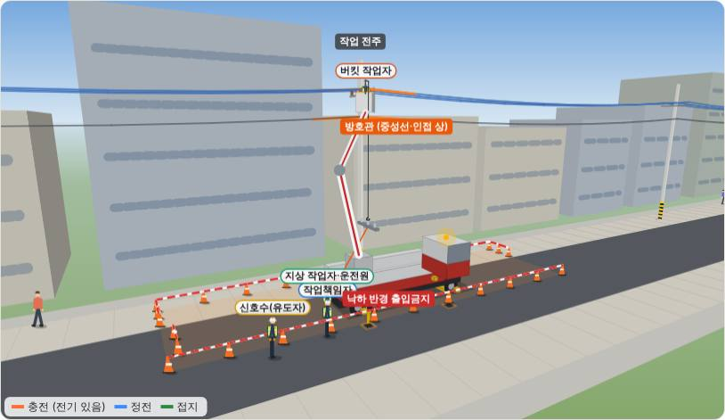
배전공사 안전 훈련Distribution work safety
가상 현장 네 곳(전주 애자·완금 교체, 변압기 교체, 지중 맨홀, 송전 철탑)에서 작업자 5명이 "생명을 지키는 안전수칙 11"에 따라 TBM부터 철수까지 안전조치를 단계별로 진행합니다. 훈련 모드에서는 다음 조치를 직접 고르고, 틀리면 왜 위험한지 알려 주고, 끝나면 결과를 인쇄하거나 PDF로 남길 수 있습니다.
On four virtual sites — pole insulators, a pole transformer, an underground manhole and a transmission tower — a crew of five follows the golden safety rules step by step, from the toolbox talk to tear-down. In training mode you pick the next action wrong picks explain the danger, and the result can be printed or saved as PDF.
훈련 시작 →Start training →전력망 · 에너지Power grid · energy
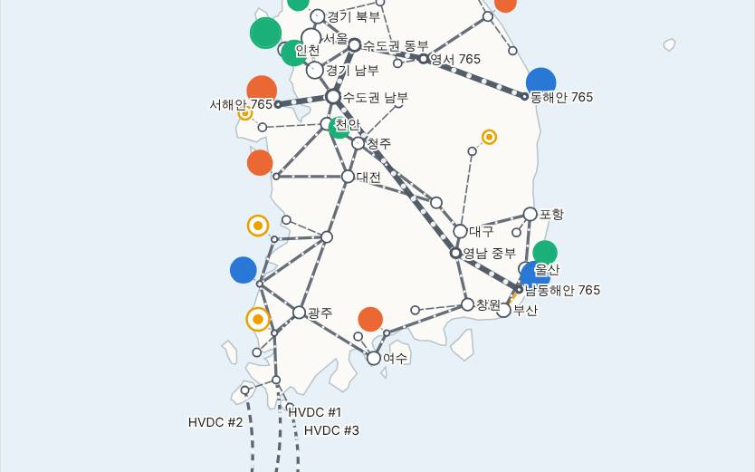
디지털 트윈Digital twin
가상 대한민국 전력망의 24시간 · 부하와 태양광에 따른 전압 · 조류
24 hours of a virtual Korean grid · voltages and flows as load and solar change
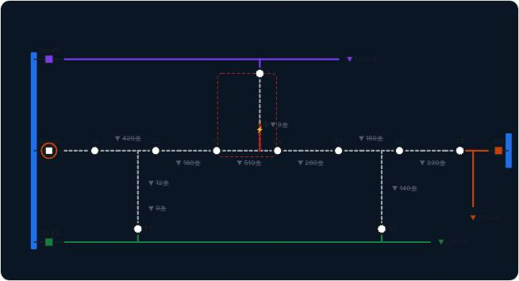
배전선로 고장 복구 (FLISR)Feeder fault restoration (FLISR)
선로를 눌러 고장 → 구간 분리 → 연계 복구 · 배전자동화와 현장 수동 조작 비교
Click a line to fault it → isolate → restore through ties · automated vs manual switching
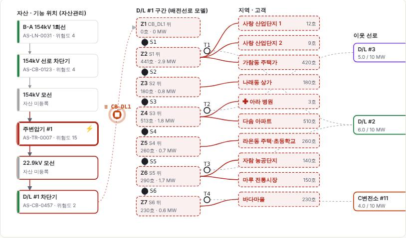
설비 고장 영향 분석Failure impact analysis
설비 하나가 고장 나면 어느 구간 · 고객이 정전되나 · 개폐기 조작 과정 재생
Which sections and customers lose power when one asset fails · replay of the switching steps
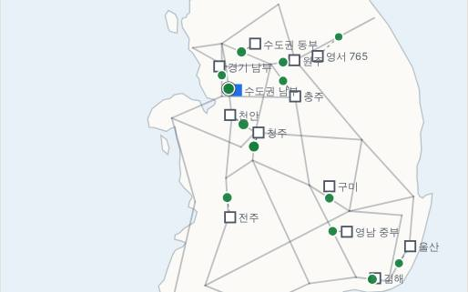
고속도로 × 전력망: 전기차 충전Roads × grid: EV charging
24시간 교통량 → 휴게소 충전 수요 → 배전선로 · 변전소 부하
24 h of traffic → rest-area charging demand → feeder and substation load
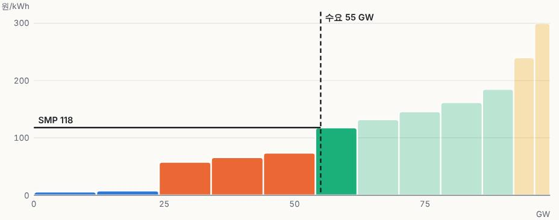
전력시장 가격 결정How the market price is set
수요를 움직이면 싼 발전기부터 채워져 SMP가 정해짐 · 한낮 태양광 효과
Move demand and the cheapest plants fill first to set the price · effect of midday solar
교통Traffic
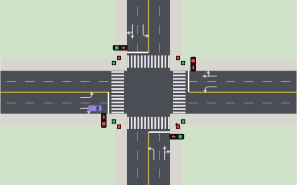
교차로 신호Intersection
위에서 본 교차로 · 차량·좌회전·보행 신호 · 고정 주기와 감응식
Top-down junction · through, left & walk signals · fixed vs actuated
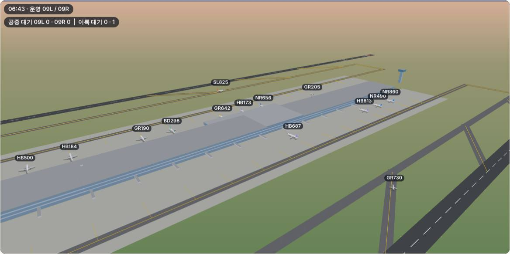
공항 이착륙Airport runways
평행 활주로 2개 · 도착·출발 안내판 · 입체 시점
Two parallel runways · arrival & departure boards · 3D-style view
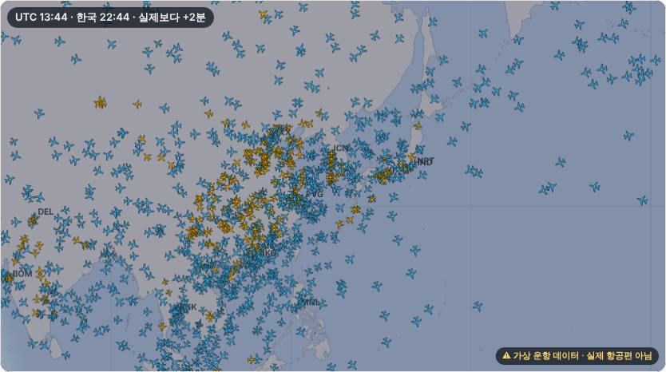
세계 항공 교통World air traffic
세계 지도 위 국내선·국제선 · 대권 항로 · 낮과 밤
Domestic & international flights · great circles · day and night
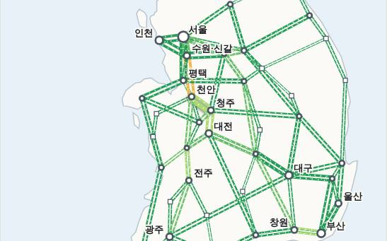
고속도로·국도 교통Road traffic
가상 전국 고속도로 · 국도망의 24시간 차량 흐름 · 사고 시나리오
24 h of traffic on a virtual national road network · an incident scenario
자연Nature
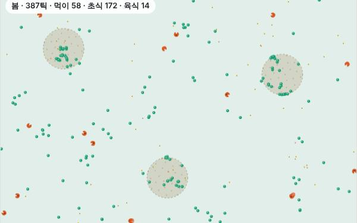
단세포 생태계Cell ecosystem
초식·육식 세포의 포식자–피식자 개체수 주기 · 피난처 · 계절 · 진화
Predator–prey cycles · refuges · seasons · evolution
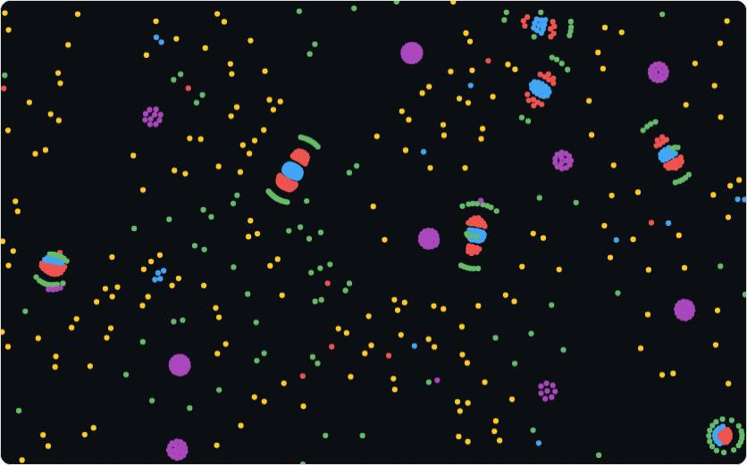
입자 생명Particle Life
끌림 · 밀침 표 하나에서 생기는 무리 · 에너지 · 번식 · 유전을 더하면 표가 스스로 진화
Groups from one attraction table · add energy, birth and heredity and the table evolves
피지컬 AIPhysical AI
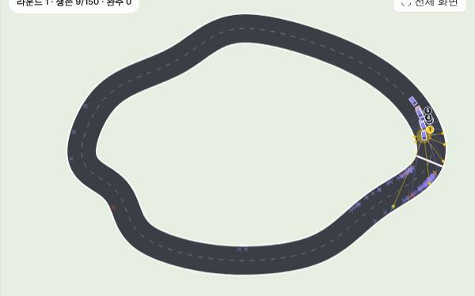
자율주행Self-driving
NEAT 신경진화 · 자동차 150대가 진화하며 트랙 주행을 배움 · 여러 트랙 · 도메인 랜덤화
NEAT neuroevolution · 150 cars evolve to drive a track · several tracks · domain randomisation
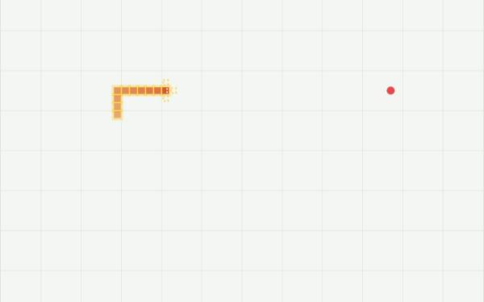
스네이크Snake
NEAT 신경진화 · 뱀 150마리가 진화하며 먹이를 쫓고 제 몸을 피하는 법을 배움
NEAT neuroevolution · 150 snakes evolve to chase food and avoid their own bodies
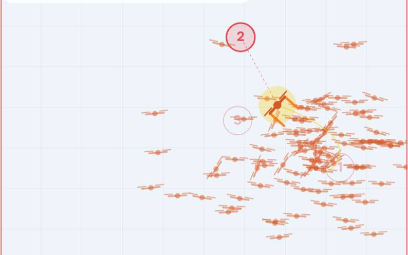
드론Drone
NEAT 신경진화 · 드론 150대가 진화하며 균형을 잡고 경유점을 나는 법을 배움 · 옆바람 실험
NEAT neuroevolution · 150 drones evolve to balance and fly through waypoints · side-wind experiment
왜 온톨로지인가Why ontology
온톨로지는 사람이 세상을 알아보는 방식을
그대로 옮겨 적은 데이터 구조입니다.An ontology is a data structure that writes down
the way people come to know the world.
우리는 세상을 글자와 숫자의 나열로 기억하지 않습니다. "변압기"를 떠올리면 그것이 무엇의 한 종류인지, 어떤 성질을 가졌는지, 무엇과 이어져 있는지가 함께 떠오릅니다. 사람은 사물과 개념을 하나의 객체로 알아보고, 그 객체를 분류하고, 다른 객체와의 관계 속에서 이해합니다.
We do not remember the world as strings of letters and numbers. Think "transformer" and you also recall what kind of thing it is, what properties it has and what it is connected to. People recognise things and ideas as objects, classify them, and understand them through their relations to other objects.
객체지향 설계가 시스템을 클래스와 객체, 상속과 관계로 짜듯이, 온톨로지는 같은 생각을 데이터로 가져옵니다. 프로그램 코드 안에 갇혀 있던 클래스 구조를 누구나 읽고, 묻고, 이어 붙일 수 있는 지식으로 꺼내 놓는 것입니다. 그래서 저는 온톨로지가 객체지향적인 시스템에서 데이터를 표현하는 가장 좋은 방법이라고 생각합니다.
Just as object-oriented design builds a system from classes and objects, inheritance and relations, an ontology brings the same thinking to data. It takes the class structure locked inside program code and sets it out as knowledge anyone can read, query and connect. That is why I believe an ontology is the best way to represent data in an object-oriented system.
둘이 어디까지 같고 어디서부터 다른지는 온톨로지 vs. 객체지향 설계에 따로 자세히 정리했습니다.
Where the two agree and where they part is set out in detail in Ontology vs. object-oriented design.
사람이 객체를 알아보는 방식과 같은 구조라면, AI가 사람처럼 지식을 익히는 데에도 가장 좋은 바탕이 될 것입니다. 수많은 글을 읽고 말을 배운 AI에게, 온톨로지는 "무엇이 무엇이고, 무엇과 어떻게 이어져 있는가"를 분명하게 알려 주는 지식의 뼈대입니다. 데이터는 계속 쌓이고 모델은 바뀌어도, 세상을 나누고 잇는 이 뼈대는 남습니다.
And if it mirrors the way people recognise objects, it should also be the best foundation for AI to acquire knowledge the way people do. For an AI that learned language from vast amounts of text, an ontology is the skeleton of knowledge that says plainly what each thing is and how it connects to everything else. Data keeps piling up and models keep changing, but this skeleton — how the world is divided and joined — remains.
이 주장을 실제로 보여 주는 시연은 AI × 온톨로지에 있습니다. 자연어 질문을 그래프 질의로 바꿔 답하는 GraphRAG와, 고장 영향을 한 단계씩 따라가는 AI 에이전트입니다.
A demo of this claim is in AI × ontology: GraphRAG answering questions through graph queries, and an AI agent tracing a failure step by step.
— Ontology Space를 만든 이의 개인적인 의견입니다.
— A personal opinion of the author of Ontology Space.